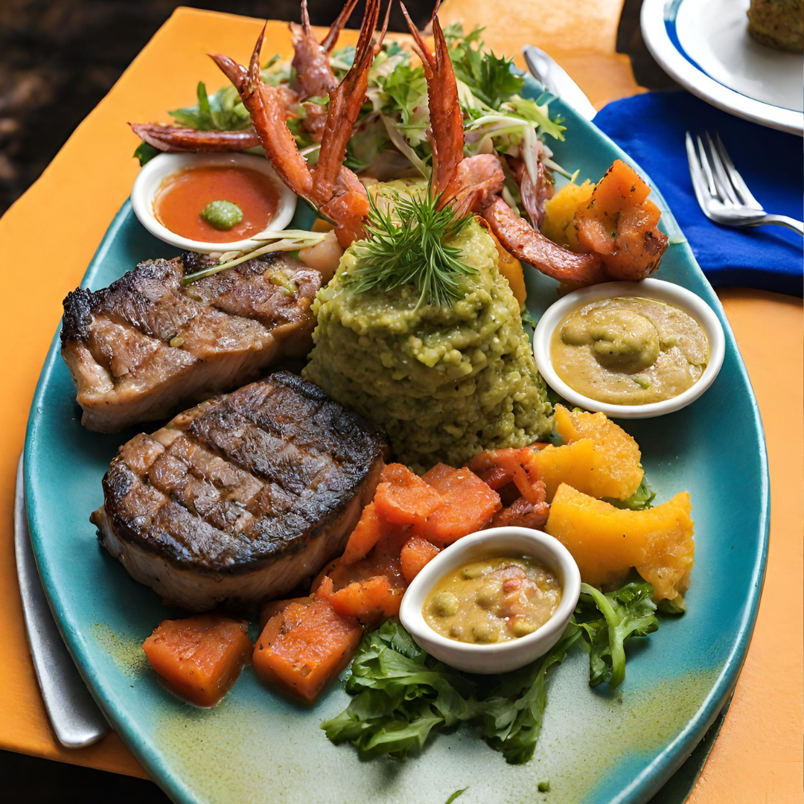
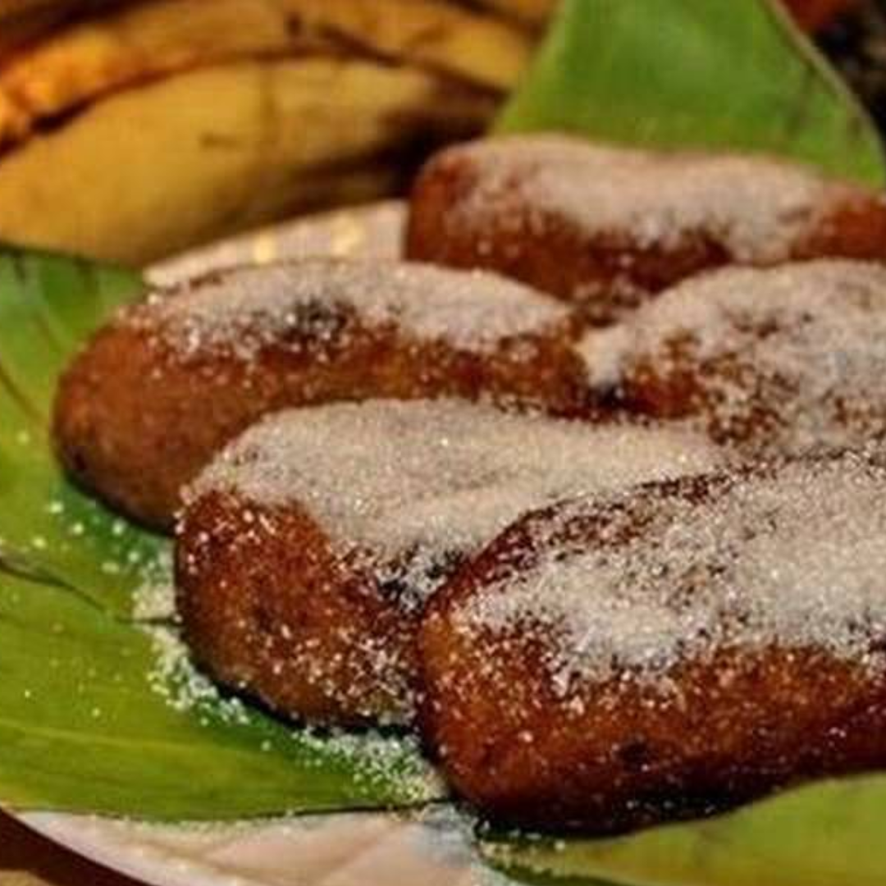

DELEÍTESE CON NOSOTROS

Platos Fuertes
Platos Fuertes
Exclusiva selección de platos cocinados a la perfección, vastos y de finos sabores para la experiencia culinaria que tú mereces.

Especiales
Especiales
Contamos con amplias promociones, platos especiales y paquetes para hacer inolvidable tú visita.

Postres y Bebidas
Postres y Bebidas
Nuestra amplia carta de bebidas y postres con amplios sabores, diseñadas especialmente para complacer en tu visita.